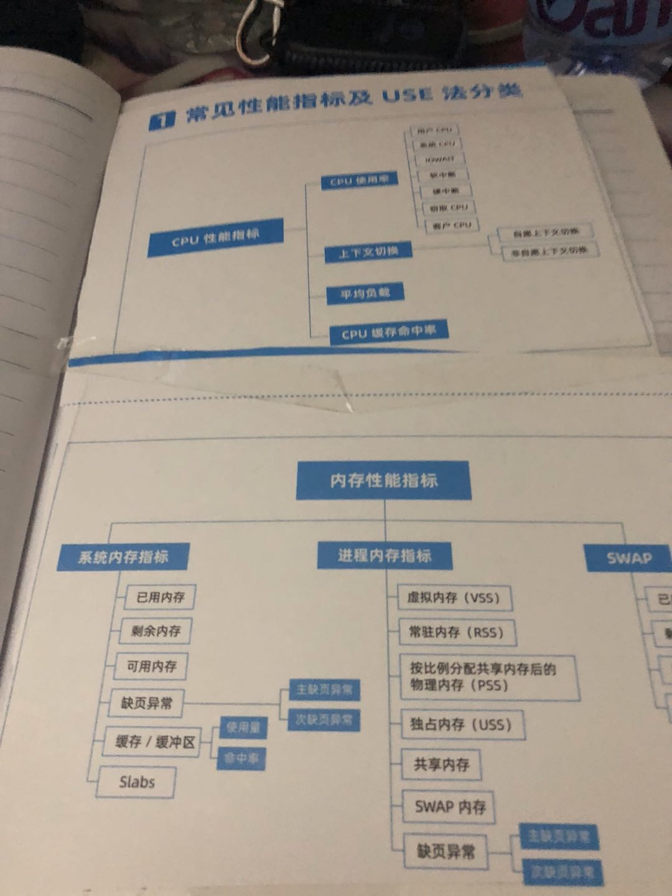

CPU 性能指标
cpu使用率
- 用户cpu
- 系统cpu
- IOWAIT
- 软中断
- 硬中断
- 窃取cpu
- 客户cpu
上下文切换
- 自愿上下文切换
- 非自愿上下文切换
平均负载
cpu缓存命中率
内存性能指标
系统内存指标
- 已用内存
- 剩余内存
- 可用内存
- 缺页异常
- 主缺页异常
- 次缺页异常
- 缓存/ 缓冲区
- 使用量
- 命中率
- Slabs
进程内存指标
- 虚拟内存（VSS）
- 常驻内存（RSS）
- 按比例分配共享内存后的物理内存(PSS）
- 独占内存（USS)
- 共享内存
- SWAP内存
- 缺页异常
- 主缺页异常
- 次缺页异常
SWAP
已用空间
剩余空间
换入速度
换出速度
常用指标分类（USE法）
| 资源 | 类型 | 性能指标 |
|---|---|---|
| CPU | 使用率 | CPU使用率 |
| CPU | 饱和度 | 运行队列长度或平均负载 |
| CPU | 错误数 | 硬件CPU错误数 |
| 内存 | 使用率 | 已用内存百分比或SWAP用量百分比 |
| 内存 | 饱和度 | 内存换页量 |
| 内存 | 错误数 | 内存分配失败或OOM |
| 存储设备I/O | 使用率 | 设备I/O时间百分比 |
| 存储设备I/O | 饱和度 | 等待队列长度或延迟 |
| 存储设备I/O | 错误数 | I/O错误数 |
| 文件系统 | 使用率 | 已用容量百分比 |
| 文件系统 | 错误数 | 文件读写错误数 |
| 网络 | 使用率 | 带宽使用率 |
| 网络 | 饱和度 | 重传报文数 |
| 网络 | 错误数 | 网卡收发错误数、丢包数 |
| 文件描述符 | 使用率 | 已用文件描述符数百分比 |
| 连接跟踪 | 使用率 | 已用连接跟踪数百分比 |
| 连接数 | 饱和度 | TIMEWAIT状态连接数 |
I/O性能指标
文件系统
存储空间容量、使用量以及剩余空间
索引节点容量、使用量以及剩余量
缓存
页缓存
目录项缓存
索引节点缓存
具体文件系统缓存（如ext4的缓存）
IOPS（文件I/O）
响应时间（延迟）
吞吐量（B/S）
磁盘
使用率
IOPS
吞吐量（B/S）
响应时间（延迟）
缓冲区
相关因素
读写类型（如顺序还是随机）
读写比例
读写大小
存储类型（如RAID级别、本地还是网络）
网络性能指标
应用层
QPS（每秒请求数）
套接字缓冲区大小
DNS解析延迟
响应时间
错误数
传输层
tcp连接数
全连接
半连接
TIMEWAIT
连接跟踪数
重传数
丢包数
延迟
网络层
丢包数
TTL
拆包
链路层
PPS（每秒网络帧数）
BPS（每秒字节数）
丢包数
错误数
总结
把极客时间LINUX手册变成MD给大家查看 _^
